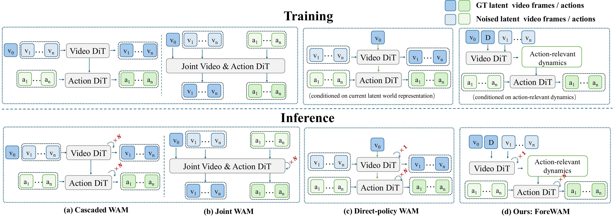
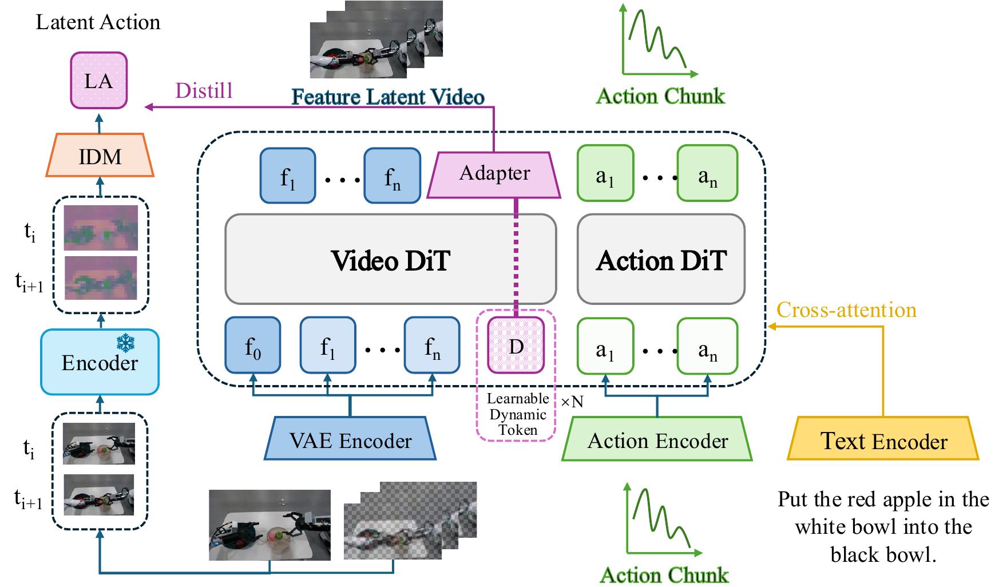
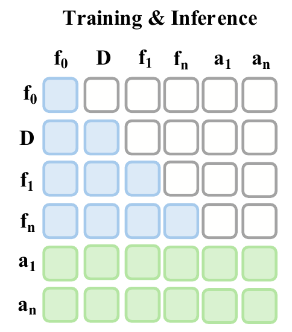

A
Future-KV
A clean current latent and noisy future slots pass through a single Video DiT prefill. The final layer's K/V states are cached and reused by the single-layer action decoder across all action-denoising steps.
A direct action policy with predictive dynamics, without decoding future videos at deployment.
1Shanghai Jiao Tong University 2ACE Robotics 3Shanghai Innovation Institute 4Nanyang Technological University 5University of Sydney
* Research intern.† Corresponding author.
Predictive context travels through hidden states, not decoded future frames.
World Action Models face a practical trade-off: explicit future generation exposes scene evolution to the policy, but iterative video denoising adds latency. Direct policies act efficiently, yet lack an explicit inference-time interface for predictive dynamics.
ForeWAM separates forecasting from rendering. One Video DiT prefill over the current visual latent and noise-initialized future slots produces reusable Future-KV context. Dynamics registers supervised by latent actions from a frozen teacher shape this context toward interaction-induced transitions. A lightweight, single-layer action decoder repeatedly reads the final Video DiT layer's cached key-value states throughout action denoising.
Without additional policy-level embodied pretraining, ForeWAM reaches 59.2% on RoboCasa with 50 demonstrations per task, 77.6% on LIBERO-Plus, and 88.7 ms policy-query latency on an NVIDIA A800—a 6.27× speedup over Fast-WAM.
Deployment boundary Future observations and the latent-action teacher are absent at inference. No future video is decoded.

Distributed visual context through Future-KV; compact transition cues through dynamics registers.

A clean current latent and noisy future slots pass through a single Video DiT prefill. The final layer's K/V states are cached and reused by the single-layer action decoder across all action-denoising steps.
A frozen LaWAM teacher supervises 16 registers with a non-executable latent transition cue, emphasizing object motion, contact changes, and task progress.
The Action DiT reads hidden predictive context while directly generating a 32-step executable action chunk. The policy never rolls out or decodes future video.

Current tokens remain current-only. Dynamics registers read current context and themselves. Future slots integrate current context and registers, while action tokens read the complete video sequence, dynamics registers, and action history.
Functionally, the action path receives cross-modal context. Structurally, the implementation concatenates cached video K/V with action K/V under a joint attention mask rather than using a standalone cross-attention block.
Open vector PDF →No additional policy-level embodied pretraining. A frozen latent-action teacher provides supervision during training only.
ForeWAM average success over four suites, with 50 rollouts per task.
Full-benchmark success across seven perturbation categories; +26.1 percentage points over Fast-WAM.
24 kitchen tasks with 50 demonstrations per task; +9.7 percentage points over Fast-WAM.
6.27× faster than Fast-WAM on one NVIDIA A800 with 10 action-denoising steps.
Latency is measured on LIBERO-10 using an NVIDIA A800 and 10 action-denoising steps; it includes VAE encoding, visual processing, action generation, and other overhead, not task-completion time. Action generation alone takes 21.7 ms for ForeWAM versus 470.6 ms for Fast-WAM.
Real-world evaluation uses an AgileX Piper arm trained on 125 demonstrations. ForeWAM improves ID success by 42.5 points over Fast-WAM. Under object-attribute shifts, its 40.0% OOD success exceeds Fast-WAM (10.0%) and Cosmos Policy (15.0%), but remains below π₀ (60.0%) and π₀.₅ (45.0%).
Full LIBERO-Plus results across camera viewpoint, robot initialization, language, lighting, background, sensor noise, and object layout.
ForeWAM improves all seven categories over Fast-WAM, with the largest gains on sensor noise (+51.4 points) and camera viewpoint (+45.3). It leads five of seven categories among the methods below and exceeds OpenVLA-OFT by 8.0 points overall.
| Method | Camera | Robot | Language | Light | Background | Noise | Layout | Avg. |
|---|---|---|---|---|---|---|---|---|
| OpenVLA | 0.8 | 3.5 | 23.0 | 8.1 | 34.8 | 15.2 | 28.5 | 15.6 |
| OpenVLA-OFT | 56.4 | 31.9 | 79.5 | 88.7 | 93.3 | 75.8 | 74.2 | 69.6 |
| π₀ | 13.8 | 6.0 | 58.8 | 85.0 | 81.4 | 79.0 | 68.9 | 53.6 |
| π₀-Fast | 65.1 | 21.6 | 61.0 | 73.2 | 73.2 | 74.4 | 68.8 | 61.6 |
| UniVLA | 1.8 | 46.2 | 69.6 | 69.0 | 81.0 | 21.2 | 31.9 | 42.9 |
| WorldVLA | 0.1 | 27.9 | 41.6 | 43.7 | 17.1 | 10.9 | 38.0 | 25.0 |
| Fast-WAM | 16.4 | 44.5 | 68.9 | 78.2 | 53.7 | 37.7 | 60.7 | 51.5 |
| ForeWAM | 61.7 | 56.8 | 85.1 | 95.8 | 76.5 | 89.1 | 83.0 | 77.6 |
Predictive-context design study on LIBERO-Plus. All four configurations use a 30-layer Action DiT under matched settings.
These matched component ablations use Wan2.1 and a 30-layer Action DiT, distinct from the single-layer ForeWAM configuration in the main results (77.6%). The 53.6% matched baseline is Fast-WAM retrained with Wan2.1, not the 6B Fast-WAM model (51.5%) in the main comparison.
| Configuration | Camera | Robot | Language | Light | Background | Noise | Layout | Avg. |
|---|---|---|---|---|---|---|---|---|
| Base policy | 37.0 | 36.5 | 64.1 | 81.5 | 49.3 | 50.1 | 63.7 | 53.6 |
| Future-KV only | 37.8 | 41.0 | 63.9 | 83.4 | 65.7 | 61.5 | 65.6 | 58.5 |
| LA supervision only | 49.0 | 36.8 | 65.1 | 75.9 | 48.5 | 50.8 | 61.7 | 54.8 |
| Both | 64.6 | 61.6 | 86.6 | 95.3 | 74.1 | 77.7 | 81.7 | 76.7 |
@article{huang2026foresight,
title = {Foresight Without Seeing: Latent Futures for World Action Models},
author = {Huang, Jiakai and Wu, Zhongbo and Xu, Siyu and Zhang, Zheng and Wang, Zihan and You, Shan and Xu, Chang and Huang, Tao},
journal = {arXiv preprint arXiv:2608.11605},
year = {2026}
}